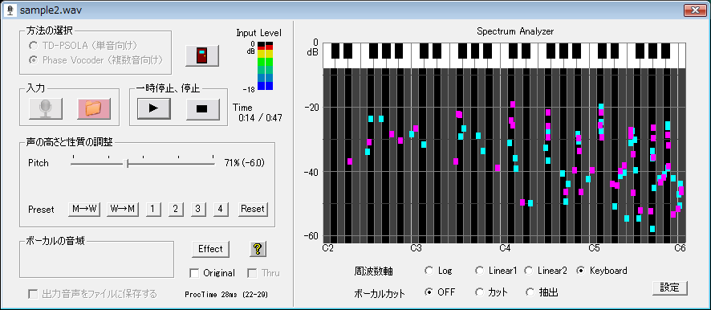

概要 TD-PSOLA画面 Phase Vocoder画面 Sound Effect画面 設定画面 問題と対策
「恋声」のPhase Vocoder選択時の表示画面

TD-PSOLAが時間軸の処理であったのに対して、Phase Vocoderは周波数軸の処理です。TD-PSOLAは単音しか正しくピッチ変換できませんが、Phase Vocoderは複数の音が重なった楽曲でもピッチの変換ができます。但し、フォルマントはピッチに連動して変化します。
マイク入力、ファイル入力の方法は、TD-PSOLAの場合と同じですので、そちらを参照して下さい。
【Spectrum Analyzerの周波数軸の選択】
Phase Vocoder選択時に、Phase Vocoder処理で行った周波数解析結果を表示します。周波数軸は、Logスケール(20Hz〜22kHz)、リニアスケール１(0〜22kHz)、リニアスケール２(0〜8.8kHz)、Keyboardスケール(C2〜C6)の４種類を選択できます。
【ボーカルカット】
ステレオ入力の中央に定位のあるボーカルをカットするあるいは抽出する機能です。
・ OFF: 処理なし
・ カット: ボーカルをカットします
・ 抽出: ボーカルだけを抽出します
ボーカルカットで関係する設定は以下のものです。
・ ボーカルの音域のMin： ボーカルの最低音を指定します
カットまたは抽出を選択すると、自動的にPitchは100%になります。